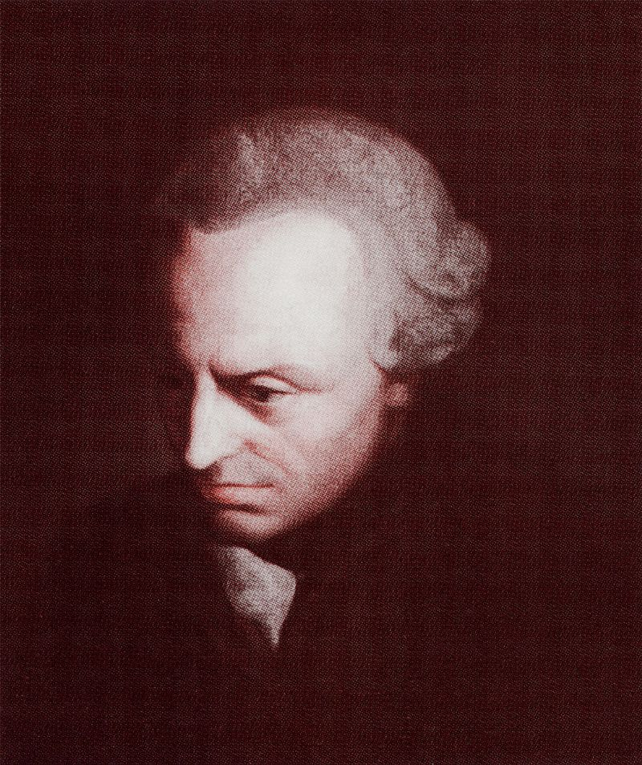
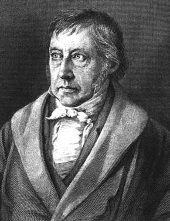
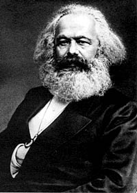
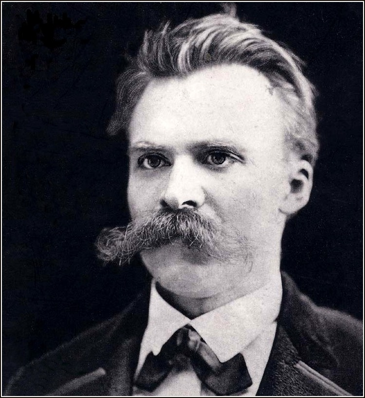
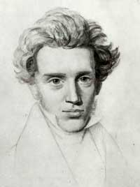

3) Vakum: 19. Yüzyılın Düşünürleri Boşluğu Doldurmaya Çalıştılar
“Günahlarımız için ölen bir tanrı,
iman ile günahtan kurtuluş,
ölümden sonra diriliş–
bunların hepsi sapık öğretiler”
Friederich Nietzsche
ydınlanma’nın sonucunda meydana gelen duygusal, ahlaki ve bilimsel boşluğu 19. yüzyıl düşünürleri doldurmaya çalıştı. Bu bölüm teolojik bağlamın ötesinde, varoluşa anlam vermeyi amaçlayan birçok girişimi incelerken bunun dışında önemli oldukça da etkili ve teolojik bir kavram olan varoluşçuluğu tanımlar. Böylece de Amerika’nın felsefeye olan en önemli katkısı, pragmatizm ile kapanır.
Kendisinin gerçekte 18. mı yoksa 19. yüzyıla mı, Klasik Döneme mi, Modern Döneme mi ait olduğu tartışmalı olsa da, ilk önce Immanuel Kant ile başlayacağız. Bazı yönlerden Kant her iki dönemin de düşünürüdür, yaşadığı dönem 18. yüzyıl ampirizmi (deneycilik) ve rasyonalizminin (akılcılık) doruk noktası iken, Kant’ın kuşkuculuğunun aynı zamanda modern bir havası vardır.
A. İmmanuel Kant (1724-1804): Eleştirisel Felsefe
Alman filozof İmmanuel Kant, birçokları tarafından modern zamanların en etkili düşünürü olarak nitelendirilir. Kant’ın öne sürdüğü fikirler üzerinde çalışan Alman Friederich Hegel, Karl Marx ve Johann Fichte’nin Batı düşüncesi üzerinde çok büyük etkileri olmuştur: Hegel’in Kant’ın düşüncelerini daha ileriye götürmesi Komünizm’in babası Karl Marx’ı etkilerken, Kant’ın öğrencisi olan Johann Fichte de daha sonraları 19. yüzyıl sosyalizm üzerinde büyük bir etkiye sahip olacaktı.
Kant’ın felsefesi, Saf Aklın Eleştirisi’nde (“Critique of Pure Reason”) (1781), insan bilgisinin temellerini inceler. Kant insan zihninin kendi dışında olan tarafsız bir gerçekliğe ulaşamayacağını savunan bireysel bir bilgi kuramı oluşturdu. Zihin, verileri gruplandırmak ya da analiz etmek gibi alışkanlıkları aklın gerçekliğine dönüştürerek aklın izlenimleri üzerinde etkin bir rol oynuyordu. İnsan zihni doğası itibariyle yalnızca zaman ve mekan çerçevesi içinde algılayabilirdi, zaman ve mekan uyaranları eleyen çerçevenin bir parçasıydı. Bu nedenle tamamen akılcı bir yaklaşımı savundu ve akılcılık ile ampirizmi birleştirmeye çalıştı. Kant Etik Metafiziği’nde (Metaphysics of Ethics) (1797) geliştirdiği mantık sisteminden daha önemli olduğunu düşündüğü kendi etik sistemini açıklar.
Kant’ın bilgiye bakışından çok, Tanrı’nın geleneksel kanıtlarını reddetmesine, etik değerlendirmesine ve Hristiyanlığa biçtiği değere değineceğiz. Kendisinden önceki Aydınlanma filozofları gibi, İncil’e bağlı olmayan, vahiyden çok akılcılığa dayanan bir öğretiyi savunması nedeniyle Prusya Kralı Frederick William tarafından Kant’ın dinsel konular üzerinde daha fazla öğretmesi ya da yazması yasaklandı. Kant, kralın ölümüne kadar bu buyruğa boyun eğdi, sonrasında ise Yalnızca Akılla Sınırlandırılan Din (“Religion within the Limits of Reason Alone”) (1793) adlı eserini yazdı.
Kitabın başlığından da anlaşıldığı gibi Kant Hristiyanlığı vahyinin, Allah’ın Oğlu olan İsa Mesih’in beden alarak dünyaya gelmesinin, Hristiyan lütuf ve kurtuluş öğretisinin ve insan ile ilgilenen doğaüstü bir Tanrı inancının dışında tutmayı amaçladı. Bunun yerine ‘kendi kendine yetme’ öğretisini öne sürdü:
Gerçek din Tanrı’nın kurtuluşumuz için ne yaptığının değil, ama buna layık olmak için ne yapmamız gerektiğinin üzerinde düşünmekten ibarettir... ve bunun gerekliliğinden Kutsal Kitap’la ilgili herhangi bir şey okumadan her insan emin olabilir
(Kant 1960:123).
İnsanın kendisi her durumda ahlaki açıdan neyin iyi ya da kötü olduğunu, olması gerekenleri anlayabilir ya da anlamalıdır
(Kant 1960:40).
Kant, Saf Aklın Eleştirisi’nde Tanrı’nın varlığına ait kanıtlara ilişkin doğal-teolojik saptamaları ciddi bir şekilde eleştirdi (yani, fızikî-teolojik olarak adlandırdığı ontolojik, kozmolojik ve teleolojik tartışmalar). Ontolojik (varlıkbilimi) tartışmalara değinirken herhangi bir şeyi tanımlamanın, onun varlığını ifade etmediğini öne sürdü. Kısaca, Tanrı’nın varlığına ilişkin ontolojik tartışmanın, O’nun varlığını kanıtlamadığını öne sürdü, bunun olasılığı bir kimsenin bankada parası olmasını istemesiyle bankada gerçekten parasının olma olasılığından daha azdı. Bir tüccarın, durumunu sahip olduğu paranın üzerine hiçbir şey eklemeden düzeltemeyeceği gibi, gerçeklik artık sadece basit fikirlerle gelişmiyordu (Kant 1915:471-508).
Kant’ın kozmolojik görüş ile ilgili formülü şu şekildeydi: ‘Eğer herhangi birşey var olmuşsa, kesinlikle gerekli olan birşey de var olmalıdır. En azından ben, şu anda varım. Bu nedenle gerekli olan birşey vardır’ (Kant 1915:487). Bu görüşün bir yere kadar makul olduğunu kabul etmesine rağmen sahte akılcılık içeren prensiplerle de dolu olduğunu öne sürdü, çünkü birşeyin fikrini gerçekliğe dönüştürmek için kabul edilemez bir ontolojik görüşten yararlanıyordu. Bunu şu şekilde ifade etti:
Her şeyin üzerinde ilahi bir varlık ideali.. bu, aklın düzenleyici bir ilkesinden başka birşey değildir. Bu teori bizim, dünyadaki her bağlantının tamamen yeterli bir nedenden kaynaklandığını düşünmemize neden olur, bunu dünyayı açıklamaya yarayan genel kurallara göre gerekli olan bir sistematik birlik ilkesi üzerine kurmak; kendiliğinden kaçınılmaz olan bir var oluşu gerektirmez
(Kant 1915:498).
Kant, tabiat düzeniyle ilgili fikirlerin bir noktaya kadar değerli olduğunu da kabul etmek zorundaydı. Kainatta yaşama anlam veren ve bilimsel keşiflere amaç kazandıran belirli bir düzenin kanıtlarını görüyoruz. Bu düzen kendiliğinden olmuş olamaz. Akıllı, bilgili, özgür bir varlığa işaret eder. Bu nedenle böyle bir varlığın birden fazla olmadığı, yani tek olduğu sonucuna varılabilir (Kant 1915:501-502). Fakat Kant doğanın düzeni ile ilgili fikirleri kozmolojinin daha ayrıntılı formu olduğu gerekçesi ile reddetti, Kant’a göre bunlar sadece kılık değiştirmiş ontolojik saptamalardı. Kısaca, Tanrı’nın varlığına ilişkin hiçbir geleneksel kanıt Tanrı’nın tarafsız gerçekliğini vermezdi.
Diğer taraftan, O’nun varolmadığı ‘aksi sadece spekülasyonlarla kanıtlanamazdı’. Doğal teoloji ‘geçersiz ve yararsız’ olabilir, ama göreceğimiz gibi Tanrı, ahlaki konularda bir rol oynamaya devam eder (Kant 1915:499-507).
Kant’ın etik sistemi, ahlak konusunda aklın da nihai otorite olması düşüncesine dayanıyordu, bundan dolayı etik de aydınlanmış, akılcı bir incelemeye tabi tutulmalıydı. Çağdaş insan kendisine aklının doğru olduğunu söylediği şeyleri yerine getirmeliydi, bazı sahte otoritelerin buyruklarını değil…
Tek gerçek din yasalardan başka birşeyden oluşmaz, bu, mutlak gerekliliğinin farkında olabileceğimiz uygulanabilir ilkelerdir ve bu nedenle bunların salt akıl ile (deneyselcilik; ampirizm ile) açığa çıkabileceğini kabul ederiz
(Kant 1960:156).
Kant’ın Yalnızca Akılla Sınırlandırılan Din adlı eserinin ilk basımının önsözü şu şekilde başlar:
Ahlak; sadece özgür olduğu için kendisini kendi aklıyla mutlak yasalara bağlayan, özgür bir vekil olarak insan anlayışına dayandığına göre, sorumluluğunu kavramak için kendi üzerinde bir Varlığın yetkisine ya da sorumluluğunu yerine getirmek için kuralın kendisinden başka bir motivasyona ihtiyaç duymaz... böylece, kendisi için ahlakın, (nesnel olarak motivasyon ya da öznel olarak harekete geçme yetisi için) bir din olgusuna pek de ihtiyacı yoktur, uygulamada salt akıl kendisine yetebilir
(Kant 1960:3).
Etik’in teolojiye dayanmayan doğasını kuvvetli bir şekilde savunmasına rağmen Kant, ölümsüzlüğün ve Tanrı’nın epistemolojik olarak gerekliliğini de öne sürdü. Kant’ın etik sistemi birkaç cümle ile özetlenebilir.
Kant herhangi bir eylemin görev duygusundan kaynaklandığını ve akıl süzgeçinden geçirilmesi gerektiğini savundu. Belirli bir ‘istek’ ile ya da görev duygusuyla yapılan eylemler arasında bir ayırım yaptı. Bir kimse isteklerini (duygularını) bastırarak görevini yaptığında ahlaksal bir eylemde bulunmuş oluyor. Başka bir deyişle, bundan hoşlansa da, hoşlanmasa da ahlak onun görevidir. Yalnızca bütün görevleri tamamlandığında kendi isteklerini yerine getirebilir.
Bunun yanında Kant ahlakın özünün güdüye dayandığını vurguladı, bu görüş, faydacıların kendisine karşı çıkmalarına neden oldu. Bir kimse ‘görevine göre’ hareket ediyorsa, örneğin; yapmak zorunda olduğu için doğru olanı yapıyorsa, bu kişi ahlaka uygun olarak hareket etmiyordur. Bir kimse yalnızca ‘görevinden ötürü’ hareket ediyorsa, örneğin; görev anlayışı doğru olanı özgürce yapıyorsa, o zaman ahlaka uygun olarak hareket etmiş olur. Yerinde eylemler, ya da sadece yasaya ya da geleneklere itaat eden davranışlar, aslında ahlak dışıdır. Bir kimsenin görevinin ne olduğuyla ilgili bilgi ise akıl aracılığıyla elde edilir.
Kant belirli bir eylemler dizisini yönlendiren iki yol tanımladı. İlki, ‘varsayımlı zorunluluklar’dır. Bu, belirli bir sonuca ulaşmak için gereken nedenler dizisini belirler. İkincisi ise ‘kesin zorunluluklar’dır. Bu da eylemin ahlaki rotasını, gereklilik ve doğruluk gibi şeyleri belirler. Kant bu durumu oldukça bilinen şu sözleriyle özetlemiştir: ‘Eylemde bulunun ki isteğinizin doğasının genel bir kural olmasını bekleyebilesiniz. Eğer isteğiniz genel bir kural haline gelirse, her durumda kendi içinde tutarlıdır ve bu özünde iyi bir istektir’ (Kant 1997:233).
Kant’ın etik savunması onun bireyin özgürlüğüne olan inancına dayanır. Kendisi bunu, ‘bireyin kendi kendini yönetme özgürlüğü, ve aklın ortaya koyduğu evren yasalarına bilinçli olarak uymak’ olarak tanımlamıştır.
Kant her bireyin refahının kendi içinde bir son olarak düşünülmesi gerektiğini öne sürdü ve toplum ideale doğru ilerliyordu, bu idealde akıl ‘her kural koyucu; yasaları bütün insanların ortak kararları doğrultusunda oluşturmakta, ve her konuyu vatandaşların istekleri doğrultusunda ele almakta birleştirecek, onların bu isteğe uymalarını sağlayacaktı’ (Grayling 1998:617-637). Kısacası Kant, bir kişinin görevini yerine getirmesinin sadece herkese eşit olarak uygulanabilecek ilkelerle değerlendirilmesi gerektiğini göstermeye çalıştı.
Peki, sonuç olarak ahlaki davranışı tanımlayan nedir: Akıl mı, deneyim mi? Yanıtı ise askıda kalmıştır. Bilimadamlarının bile insan özgürlüğüyle ilgili, hareketlerimizi önceden tahmin edebileceklerini söyledi. Bu tahminler özgür irademizi kullanmamızı etkilemezdi. Hal böyle olunca, bilim adamlarının tahminleri, görevlerimizi yerine getirerek ahlaklı yaşamlar sürme zorunluluğunu değiştirmez.
Peki Tanrı bu resmin neresindedir? Gördüğümüz gibi Kant, O’nun varlığını akıl ile kanıtlamanın ya da reddetmenin imkânsız olduğunu öne sürdü, çünkü akıl olası deneyimlerden gelen görüşlerle sınırlıyken Tanrı düşüncesi deneyüstü birşeydi. Fakat yine de Tanrı’ya olan inancın akılcı olabileceğini öğretmeye devam etti. Çünkü Tanrı’dan bağımsız olarak ahlakın doğruluğunu kanıtlamak imkânsızdır. Kant ‘ahlakın kesinlikle bizi dine götürdüğünü’ (Fackenheim 1996:4) öne sürdü, çünkü din bir kimsenin gerçek ahlakı kavraması gerektiği umudunu verir. Fakat, umudun kendisi, ahlaksal olarak sakıncalı olsa da, akılcı değildi. Peki Kant, dini umudun doğruluğunu akılcı bir şekilde nasıl kanıtlamıştı? Ahlaktan dine olan geçişi nasıl sağlamıştı? Kant’ın bu görüşleri oldukça önemlidir, çünkü ‘ahlaki teolojinin’ yerine ‘doğal teoloji’ koymayı amaçlar. Bu kolay anlaşılır bir konu değildir. Kant’ın iddiasını daha yakından inceleyelim (aşağıdaki açıklama Fackenheim 1996:5-33 bir özetidir).
Akılcı, ahlaklı bir varlık olan insanın karşısına çıkan soru şudur: ‘En iyi nedir?’ Tarih süreci bize Epikürcülük ya da Stoacılık gibi birçok seçenek sunar. Diğerlerinden çok daha farklı olan bu fikirler Kant’a göre hatalıydı, çünkü biri, insanı hayvan seviyesine indirirken, diğeri insanı Tanrı’ya benzetiyordu. Kant insandaki en iyi değeri iki parçada inceledi: eksiksiz erdem ya da kutsallık ve tam mutluluk. Bu iki ideale ulaşması zorunlu olsa da, hiçbir zaman bunlara tamamiyle ulaşmak mümkün değildir. Tam bir kutsallık insanın ulaşamayacağı bir yerdedir, gelişi güzel bir şekilde tam bir mutluluğa doğru ilerleyebilir. Kısacası ‘en iyiyi kavramak; (I) ahlaksal açıdan mükemmelliği amaçlamak (II) ona ulaşmak (III) ve böylece mutluluğu hak etmek (IV) ve kusursuz bir erdemin mutlak sonucu olarak onu elde etmektir’ (Fackehneim 1996:6). Buradaki sorun insanın en iyi haliyle, bu amaçların sadece ilkini gerçekleştirebilmesidir, fakat bütün bu dört amacı da başarmak zorundadır! Fakat yapmak zorunda olduğu şeyi, aynı zamanda başarabilmelidir de.
Sonuç olarak, insanın bunları gerçekleştirebilmesi için uygun durumların olması gerekir. Kant’ın düşüncesine göre bu koşullar insanın ölümsüzlüğü ve Tanrı’nın varlığıdır. Tam bir kutsallık ve mutluluğa ulaşmak için gerekli olan bu dört koşulun ön şartlarını getirdiğimizde ölümsüzlük, sınırlı olmaktan kaynaklanan ikilemi ortadan kaldırır. İnsanın sonsuzlukta tam kutsallığa sahip olmasını sağlar, bu kutsallık elde edildiğinde tam mutluluk ile ödüllendirilecektir. Bu durum, sadece iki farklı dünya, yani sınırlı ve sınırsız olan birleştirildiğinde mümkün olabilir. Bu birleştirici unsur her şeyi bilen, her şeye gücü yeten ve herşeyin üzerinde kutsal olan Tanrı olmalıdır. Böylece din ahlaki görevlerin tanrısal buyruklar olarak yorumu haline gelir, kutsallığa ulaşma olasılığı ve hak edilen mutluluk armağanı için bir umut verir. Aslında dinin –ve Tanrı’nın– doğrulukları akılcı bir şekilde kanıtlanıyordu. Çünkü, ‘ahlaki akıl anlaşılabilir olanın mutlaka kavranmasını ister’ (Fackenheim 1996:7). Tanrı epistemolojik bir gereklilik haline gelmiştir. Daha sonra göreceğimiz gibi Nietzsche Kant’ın Tanrı’ya olan ihtiyaç görüşünü alaya alacak ve Tanrı’yı tamamen yok sayacaktı.
Colin Brown’un yazdığına göre Kant, yazdığı pekçok eserinde İsa Mesih’in ismini geçirmiyordu. Bunun yerine, ‘Tanrı’yı hoşnut eden bir insanoğlu idealini’ temsil eden, böylece insanlara da izlemeleri için bir örnek teşkil eden birinden bahsediyordu. Tanrı’yı ya da dini tamamen gözardı etmese de, ‘onunki Tanrı’sız bir dindi, aslında dinsiz bir dindi. Tapınma gibi bir unsur da içermiyordu. Savunduğu temel fikirler dindar olsun ya da olmasın, herkes tarafından uygulanabilirdi. Tanrı ikinci bir varsayım statüsüne indiriliyordu (Brown 1969:104-105).
B. Friedrich Hegel (1770-1831): Mutlak Ruh’un Dialektiği
Georg Wilhelm Friedrich Hegel tutucu bir Protestan çevrede yetişti. Babası din adamı olmasını istedi ve 1788’de Tübingen Üniversitesinde ilahiyat okudu. Felsefe ve teoloji dalında eğitim almasına rağmen, din adamı olmak istemedi. 1816’da Heidelberg Üniversitesinde bir felsefe profesörü oldu ve 1818’de Berlin Üniversitesi’ne geçti.
Hegel gerçekliği felsefi olarak açıklayan kavramsal bir yapı oluşturmaya çalıştı. Bu gerçeklik kavramı Mutlak Ruh’tu. Bu Mutlak Ruh’un gelişimi (ya da bununla ilgili bizim anlayışımız) Hegel’e göre üç felsefi süreç içerisinde açıklanabilirdi: ilki Mutlak Ruh’un akılcı, içsel yapısını açıklamak için gerekliydi, diğeri Mutlak Ruh’un kendisini doğada ve tarih sürecinde nasıl belli ettiğini ortaya koymak olmalıydı. Bir diğeri ise Mutlak Ruh’un ilerlemekte olduğu amacı gösterebilirdi.
Hegel Mutlak Ruh’un ilerleyişinin, ilerlemenin karşıtlıkların çatışmasının sonucu olduğu görüşünü içeren diyalektik bir süreç tarafından yönetildiğini düşündü, bu genellikle tez, antitez ve sentez kavramlarıyla açıklanırdı. Tez; kendiliğinden ya da kendi içinde tamamlanmamış bir fikir ya da tarihsel bir harekettir. Bu ise çatışan bir fikir ya da hareket ile sonuçlandığında antitezi verir. Bu da üçüncü bir bakış açısı kazandırır, hem tezin hem de antitezin doğrularını daha yüksek bir seviyede birleştirir. Sentez yeni bir tez haline gelir, bu da yeni antitezler meydana getirir, böylece yeni bir sentezin oluşmasını sağlar. Bu dialektik yöntemle yeni, doğal, bilimsel ve tarihi gelişmeler kendi temel amaçlarına doğru sürekli ilerlemişlerdir.
Hegel bu dialektik süreci üç aşamada inceledi: sanat, din ve felsefe. Mutlak Ruh’u maddesel bir şekle soktuğunuzda sanat, akılcı olanı güzelliğin somut şekliyle açıklar. Din sanatın yerini alır. Çünkü, Mutlak Ruh’u semboller ve tasvirler ile anlatır. Hristiyanlık tüm dinlerin en yüce şeklidir çünkü İsa Mesih’in beden alması ve dünyaya gelmesi Mutlak Ruh’un sınırlı olanda kendisini gösterir gerçeği yansıtır. Mutlak Ruh’u akılcı olarak anlamayı amaçladığı için felsefe dinden üstündür.
Bu nedenle insanoğlu tarihi insanın diyalektik süreç içerisinde giderek daha da özgür olduğu akılcı bir süreç haline gelir. Bu akılcı tarih süreci son noktasına geldiğinde –bu ne zaman ya da ne olursa olsun– Hegel Mutlak Ruh’u Tanrı ile özdeşleştirmeye başladı. Başka bir deyişle Tanrı neticede insanın etkinliği ile zihinlerde yer etmeye başlamıştı:
Kendisini Kendinden ayırır ya da Kendisi için var olan bir şeydir dersek Tanrı’yı tanımlarız, fakat bu ayrım tamamen Kendisiyle özdeştir, gerçekte Ruh’un kendisidir. Sınırlı bilinçlerimiz Tanrı’yı, Tanrı’nın Kendisini onda bildiği ölçüde bilebilir; Yani Tanrı Ruh’tur, gerçekte Kendi Kilise’sinin, O’na tapınanların Ruh’udur. Bu kusursuz dindir, İnanç kendi içinde tarafsız olmuştur. Tanrı’nın ne olduğu burada açıklanır; O artık her şeyin üzerinde bir Varlık, Bilinmeyen değildir, çünkü O insana ne olduğunu açıklamıştır, bunu sadece tarih süreci içerisinde değil ama zihinde gerçekleştirmiştir
(Hegel 1962:327).
Hristiyanlık ve Hegel’in düşüncesi arasındaki ilişkiye kitabın ilerleyen bölümlerinde de değineceğiz, özet olarak açıklaması yetersiz kalsa da bu konu oldukça önemlidir ve üzerinde daha fazla durulması gerekir (aşağıdaki açıklama Fackenheim 1970:8-14; 233-242’in özetidir).
Hegel’e göre insan hayatının önemli bir dini boyutu vardı, bu olmadan insan tarihin hiçbir yerinde felsefi düşüncede ilerleme kaydedemezdi. Aslında gerçeklik tamamen ruhsal bir şeydir, her şey ilahi evrimin bir parçasıdır. Yani, Tanrı kendi yaratışının içkin bir parçasıdır. Ve özellikle Hristiyan inancı boyutu olmadan modern dünyada akıl da tamam olmazdı. Yani, Hegel’e göre Hristiyanlık, Tanrı’nın tarihte kendini keşfetmesi için önemli bir unsurdur. Hristiyanlık olmadan dünya parçalanmış, eksik kalırdı (yani tez ve antitez bulunurdu, ama sentezden yoksun kalırdı).
Bu da açık bir çelişkiyi getirir: Hegel’in felsefesi Hristiyan dinine –özellikle Protestanlığa– nasıl ihtiyaç duyar ve yinede kapsamlı bir akılcı sistemin özerkliğine sahip olur? Sonuçta kapsamlılık Hegel’in ana hedefiydi; kendisinden önce gelen düşünürler ya bu ya da şu yönü öne çıkardılar: Kant ahlaksal olarak doğrulanan bir dini umdu, Fichte ‘sevinçli bir ahlaki faaliyetin dinini’, Schleiermacher pasif bir dindarlığı, Schelling ise eşsiz ‘vahiy’ olan sanatı vurguladı. Böyle bir seçim yapmak Hegel’e göre değildi. Ona göre,
gereken dayanak noktası yaşamın ya da ‘deneyimin’ tamamı olmalıdır; bu, uygar olanın yanında medeniyeti tanımayanı, soyut doğa bilimin yanında somut olan ahlaki ya da sosyal etkinliği, yaşamın boyutlarını aşan din ve sanatın yanında sınırlı bir yaşamı da içine alır
(Fackenheim 1970:228).
Böylece, kendisinden önceki düşünürlerin aksine, Hegel din ile ilgili felsefi düşünceleri ya da soyut şeyleri değil ama var olan dinleri açıklamaya çalıştı. Bu da onu tarih süreci içerisindeki Hristiyanlığı ele almaya yöneltti. Hristiyanlık:
…felsefi olarak hafifletilmemiş, mitolojikleştirilmemiş, yeniden yapılandırılmamıştır. Onun (Hegel’in) öncelleri Hristiyan inancını kendi felsefi betimlemelerine göre yeniden şekillendirme eğilimindeydiler… Varolan dini, gerçekte bütün varoluşu oldukça ciddi bir şekilde ele alan Hegel şaşırtıcı bir şeyi meydana çıkardı. İnsanın dini yaşantısı felsefi düşünce için ya da felsefi düşünce ile bozulmuşluktan ve kötü olandan kurtarılmak için beklemek zorunda değildir. Hristiyan yaşamında bu kurtuluş halihazırda gerçekleşmiştir. Hristiyanlığın kendisi –felsefi anlayışı değil– günahın bütünüyle gerçek olduğu fakat tamamen de yenilgiye uğratıldığı hem bir birleşim hem de bir çatışmadır. Bu nedenle Hegel’in felsefesinde artan ölçüde Hristiyanlığı ele alması tesadüfi değildir… Hegel ilk önce Tanrı’nın Mesih’teki çelişkili esinini kabul eder ve bunu felsefi düşünce ile açıklamaya kalkışır
(Fackenheim 1970:231).
Sentezi üç unsurdan oluşur: 1) Sınırlı dünyanın ötesinde, tamamen dünyaya gelen ve onu kurtaran sınırsız bir Tanrı’ya modern bir dini güven; 2) Modern kültürün sınırsız gayelerinin özünde var olan dünyasal modern bir özgüven; 3) Gerçek olanı anlaşılır kılmak için felsefi düşünceye olan güven.
Sonuncusu Hegel’i tarihe yönelmeye itti. Yalnızca akıl ve Hristiyanlığın içeriği tarihte birleştikleri taktirde ‘bu açık birleşim nihai olanı ve böylece tarihin ötesinde, felsefi düşünceyi meydana getirebilirdi’ (1970:232). Hegel’e göre böyle bir birliğin olması için gerekli koşulları sağlayan modern burjuva Protestan dünyasıydı. Hristiyan kurtuluşu modern dünyadaki modern Protestanlığın gönlüne bir ortaçağ Katolik cennetinden gelip yerleşmişti. Bu gönül onun dünyevi ifadesi için özgür bir dünyasal eylem gerektirir. Bunun karşılığında ise modern dünyada ‘bütün sınırlı gerçekliğin sınırlarını ortadan kaldıran ve ebediyen gerçeklik ile parçalara ayrılmış olarak bırakan sınırsız bir idealizm boyutu’ elde edilir: böylece yapılması gerekenin özgür olarak yapılması Tanrı’nın yapmış olduklarına, örneğin kabul etmeye eğilimli bir imana özgü tanrısal bir eyleme işaret eder’ (:233).
Hegel’in modern burjuva Protestan dünyasına olan inancı ne yazık ki yersizdi. Dünya Savaşları’ndan, Auschwitz, Hiroşima ve Nagazaki’den önce yaşadı ve öldü. Kendi felsefesini, bütün felsefelerin sonu ve Hristiyanlığın kurtarıcısı olarak görmesine rağmen, Alman devlet Protestanlığının da hayal kırıklığına uğratacağını önsezmiş gibiydi. Hristiyan Dini (“The Christian Religion”) adlı yapıtının son bölümü bunu yansıtıyor:
İmanı özellikle insanlar arasında, örneğin aşağı sınıflarda nesnel doğrularla geliştirmek için, doğruyu öğretme görevi papazlara emanet edilmişti. Bu, kimin hizmetinde bulunuyorsa, dini sürekli olarak teşvik etmesi gereken vazifeydi. Papazlara ait olan bu göreve çeşitli anlaşmazlıklar karıştığında (özellikle tarih süreci ile ilgili olanlar), ahlaki değerler ya da nedenler, ahlaki ya da öznel duygular ya da erdemler, bunların hepsi dinin yerine koyulmuş olur. Bir kimse dini tarihsel bir olgu olarak nitelendirirse, din biter... Tuz tadını yitirir. Her şey kendi sınırları içerisinde kaldığında, temel ve güvenilir olan şeylerin hepsi gelişi güzel bir şekilde çıkarıldığında ve insan içsel olarak nesnel doğrudan, nesnel doğrunun içeriğinden ve yönteminden yoksun kaldığında, geriye kalan şudur: Sınırlı olan kendi aleyhine dönüşmüştür; kibirli bir verimsizlik ve içerikteki yetersizlik, kendi sınırları içerisinde kalmış bir aydınlanmanın uç noktaları… Dünyada neler olup bittiği bizi ilgilendirmez
(Hegel 1979:295-297).
Eğer Protestanlık yeni bir sentez, yeni bir birlik oluşturmakta başarısız olduysa, bu parçalanmayı ne düzeltebilir? Hegel bu soruya bir yanıt veremezdi–ve ben de veremem. Bunun bir yanıtı yoktur. Gerçeklik parçalardan oluşur. Hegel’inki bir sentez oluşturmak için olan en büyük felsefi çabalardan biriydi, ve zaman onu haksız çıkardı. Sonuç ise felsefi, sosyolojik ve psikolojik parçalanma ve şüphecilik. ‘Mutlak olan ölüdür’ (Fackenheim 1970:238).
Hegel’in sosyal görüşleri en belirgin şekilde ahlakla ilgili düşüncelerinde görülür. Bir dereceye kadar, Hegel ahlakın bireyin vicdanını ilgilendiren bir soru olduğuna inandı. Fakat, diğer taraftan da bu seviyenin dışına çıkarak sosyal ahlakı ele almak gerekirdi, çünkü bireyler sadece sosyal bir bağlamda tam olarak nitelendirilebilirler. Bu nedenle bireyin görevi sosyal bir görevdir, ve muhakkak kendi bireysel yargısının bir ürünü değildir. İdeal olarak, devlet etik ruhun en yüksek ifadesi olan genel isteğin göstergesidir; bu nedenle devletin bir parçası olmak bireyin en önemli görevlerinden biridir. Özgür ve akılcı bir birey devletin iradesiyle ifade edilen genel isteğe boyun eğer. Bu onaylanmış totaliterianizm olarak görülmüş olsa da ya da görülse de Hegel özgürlüğün devlet tarafından kısıtlanmasının ahlaki açıdan kabul edilemez olduğunu da öne sürdü.
Hegel’in düşünceleri geniş bir kitleye ulaştı ve öğrencileri sağ ve sol kanat guruplara ayrıldılar. Felsefi düşünce Hegel’in ya modern, dünyasal özgürlüğüne ya da modern Protestan inancına bağlı kalmıştır. Sağ-kanat, tutucu, siyasi açıdan muhafazakâr Hegelciler Hegel’in felsefesi ile Hristiyanlığın uyumunu vurgulayarak ikinci düşünceyi savundular. Daha sonra göreceğimiz gibi, bu gibi Hegel-sonrası muhafazakâr izleri Danimarkalı filozof ve teolog olan Soren Kierkegaard’ın varoluşçuluk ilkesinde belirgin bir şekilde vardır. Bununla beraber Tanrı ve insanın buluşmasının bu dünyanın ötesinde değil ama, gerçek dünyada olduğunu öğreten Martin Buber de aynı düşüncelerden etkilenmiştir.
Tarihin akışında daha da önemli bir yere sahip olan sol-kanat Hegelciler ateizme doğru ilerlemiş, bunlardan birçoğu siyasi devrimciler olmuşlardır. Hegel’in dünyaya gelen ve onu kurtaran, sınırlı olan bu dünyanın üzerindeki sınırsız Tanrı’ya yönelik görüşlerini reddettiler. Bu da, onları insanoğlunda var olan mutlakiyeti aramaya yöneltti. Başlıcaları Ludwig Feuerbach, Bruno Bauer, Friedrich Nietzsche, Friedrich Engels ve Karl Marx’dır. Hegel’in tarih sürecinin diyalektik olarak ilerlemesi düşüncesi Engels ve Marx’ı oldukça etkilemiştir fakat daha sonra da göreceğimiz gibi, Hegel’in idealizminin yerine materyalizmi savunmaya başladılar. İlk olarak Ludwig Feuerbach’ı inceleyeceğiz.
C. Ludwig Andreas Feuerbach (1804-72): Tanrı İnsanın Bir Yansımasıdır
Ludwig Feuerbach teolojiye, daha doğrusu anti-teolojiye odaklanan bir filozoftu. Schleiermacher (bkz 10. bölüm) ve Hegel’in Tanrı’nın soyut olması özelliğiyle ilgili iddialarından çok etkilenerek teolojiyi antropolojiye dönüştürmeye çalıştı.
Tanrı sevenlerin insan sevenlere dönüşmesini, tapınanların çalışanlara, sonraki yaşama aday olanların şu anki yaşam için çalışanlara, Hristiyanlar’ın kusursuz insanlara dönüşmelerini istedi… Yüzünü cennetten vazgeçerek dünyaya, imandan sevgiye, Mesih’ten birbirimize çevirmeyi, her şeyden, fakat gerçekten her şeyden ziyade, doğaüstücülüğü reddederek gerçek hayata doğru yönelmeyi istedi
(Barth 1959:355).
Bir zamanlar Hegel’in öğrencisi olan Feuerbach, öğretmeninin gerçekliğin Mutlak Ruh’un dışa vurumu olduğunu savunan felsefi idealizmini reddetti. Kendisi özünde, 1841’de duyularımızla algıladığımız dünyanın ötesinde ve dışında olan, mekân ve zamanda var olmayan her şeye inanmayı reddeden bir ampiristti. Fakat her şeyi hareket halindeki madde olarak değerlendirecek kadar da katı bir materyalist değildi. Din konusuna gelince, Tanrı’nın var olmadığını göstermeye çalışmakla ilgilenmiyordu. Bunun yerine, dini, akılcı yollarla anlaşılabilen ve açıklanabilen, doğaüstü olmayan bir şey olarak anlamaya çalışmıştır.
Tanrı’nın, her şeye gücü yetmesinden dolayı her şey olduğu ve her şey yapabildiği söylene gelmiştir; fakat o hiç bir şeydir ve kendisi ile çelişen hiç bir şey yapamaz. Her şeye kadir olmak bile akıl ile ters olan bir şeyi gerçekleştirmeye yetmez. Bu nedenle her şeye kadir olan Tanrı’nın üzerinde aklın daha üstün olan gücü; Tanrı’nın doğasının üzerinde anlamanın doğası vardır, bu, Tanrı’yla ilgili neyi doğrulayıp neyi reddedeceğimizi belirten ölçüttür, olumlu ve olumsuz olanın ölçütüdür
(Feuerbach 1957:38).
Doğaüstücülüğün tamamının yerine–Hristiyanlar’ınki olsun, Kant veya Hegel’in düşünceleri olsun–dini psikolojiyi koydu. Fakat Hristiyanlığın Özü (“The Essence of Christianity”) (1841), Dinin Özü (“The Esence of Religion”) (1845), Dinin Özüyle İlgili Dersler (“Lectures on the Essence of Religion”) (1851) gibi önemli kitaplarının başlıkları onun bu amacını gizlemiştir. Hristiyanlığın Özü adlı en iyi bilinen yapıtında Feuerbach dinin psikolojik bir ihtiyacı tatmin ettiğini, o nedenle dine gereksinim duyulduğunu öne sürmüştür. İnsanların zihinleri aslında kendileriyle meşgul olduğu için, Tanrı’ya tapınmak gerçekte idealize edilmiş kendimize tapınmaktır. Tanrı gerçekte mükemmelleştirdiğimiz kendimize tapınmaktır. Başka bir deyişle Tanrı’nın yerine doğayı koydu, fakat bunu Spinoza’cı bir panteizmle ya da Hegel’in Mutlak Ruh’uyla değil, ama insanın kendisiyle yaptı.
Tanrı olarak adlandırılan bu ilahi varlık insandan başka bir şey değildir, ya da bireysel insanın sınırlarını aşmış ve bunlardan arınmış, nesnelleştirilmiş –örneğin, diğerlerinden farklı, özel bir varlık olarak düşünülüp saygı uyandıran–insan doğasıdır. Bu nedenle tanrısal doğaya mal edilen her şey insanın vasıflarıdır
(Feuerbach 1957:14).
Buradan da varacağımız yer ise onun çokça bilinen denklemidir: “Teoloji antropolojiden başka bir şey değildir–Tanrı bilgisi insan bilgisi ile aynıdır” (Brown 1969:134). Gerçekte din, antropoloji olmalıdır, çünkü Tanrı’da eğer hiçbir insan özelliği bulunmasaydı, insan ile bir bağlantı da kuramazdı. Fakat, Feuerbach’a göre doğaüstü olan hiçbir şey yoktur, diğer herhangi bir insan olgusu gibi dine de deneysel olarak yaklaşmak gerekir. Özünde bu, gerçek dünyadan malzemeleri alarak yeniden düzenleyen rüyalar, kurgu, fanteziler, yaratıcı sanatlar ile aynı seviyededir. Din, insanların kendi çaresizlikleri nedeniyle yöneldikleri bir hayaldi. Bir hayal olduğu için de, tamamen insan odaklı değildir, felsefe ve bilim ile çelişir.
Feuerbach genelde insan özeliklerinin ve gücünün Tanrı’ya mal edildiğini göstererek Tanrı’nın insan benzeyişinde yapıldığını kanıtlamaya çalıştı; aslında bunlar, insanda olan tanrısal güçlerdi.
İnsandaki tanrısal üçlü birlik... aklın, sevginin ve iradenin birleşimidir
(Feuerbach 1957:3).
Her varlık kendi içinde ve sonsuzdur–kendi içinde, anlaşılabilen en büyük varlığa, kendi Tanrı’sına sahiptir
(:7).
Ve doğanız bu kadar yol kat ettiğine göre, kendinize güveniniz de bu kadar fazlalaştığına göre, Tanrı da o kadar ilerleme kaydetmiştir
(:8).
Tanrı bilgisi kendini bilmektir. Bu bilgiyle Tanrı da insanı tanır, insanın nazarında Tanrısı; bu ikisi özdeştir. Tanrı bir insana ne ise, yüreği, ruhuyla; bunun karşılığında Tanrı içsel doğada belirgin olan şey, bir insanın kendisinin dışavurumudur–din insanın saklı kalmış hazinelerinin açığa çıkması, en derin düşüncelerinin ortaya çıkması, sevgi sırlarının açık itirafları. Din insanlığın çocuksu durumudur. Fakat bu çocuk kendi dışındaki doğasını –insanı– görür, çocukken insan kendisine, başka bir şekle girmiş bir nesne gibidir. Bu nedenle dinin tarihsel gelişimi bundan oluşur: benzer biçimde daha önceki bir din nesnel olarak görülse de, şu anda öznel olduğu kabul edilir; bu, daha önceleri Tanrı olarak tapınılan ve Tanrı olduğu düşünülen şeyin şimdi insan gibi bir şey olduğunun fark edilmesi anlamına gelir… Tanrı ve insan antitezinin tamamen asılsız olduğunu göstermek bizim vazifemizdir
(:12-13).
Dinin onuruna inşa edilen tapınaklar aslında mimarinin onuruna yapılmışlardır
(:20).
Düşünmek Tanrı olmak demektir
(:40).
İlginçtir ki Feuerbach, kendi Hristiyanlık yorumunu teolojik olarak temellendirmesi için Martin Luther’e başvurur. Luther’in Mesih Bilimi ve Rabbin Sofrası doktrini, Tanrılığın göksel yerlerde değil, Tanrı-İnsan Mesih İsa’da aranması gerektiğini öğretmişti. Bu, Rabbin Sofrası’nda kullanılan öğelerden anlaşılır. Dahası, yücelik, her şeye gücü yetmek, her yerde varolmak, sonsuzluk gibi özellikler Mesih İsa için de geçerliydi. ‘İlke olarak, bu, Tanrı’ya ve insana ait yüksek ya da alçak olan konumların yer değiştirebileceği anlamına gelirdi… Eski tanrıbilimcilerin Mesih’in kişiselliği için doğru olduğunu gördükleri şimdi… genel olarak insan için uygun sayılabilir’ (Barth 1959:359).
Feuerbach’ın bir ateist değil, bir ‘antideist’ olduğu söylenir. Kendi yaratılışının dışında olan, Hristiyan egemen Tanrı düşüncesine karşı çıkarak onu doğanın –insanın– kendisine yönlendirdi. Daha sonra da din olgusunu açıklamak için insanın Tanrı anlayışını kişiselleştirdi.
Karl Barth, insanın soyut bir kavram olarak değerlendirilmesi yönündeki görüşleri nedeniyle Feuerbach çağdaşlarının onu kendi görüşlerini çürütmeye zorladıklarına dikkat çeker:
Döneminin çoğu filozofu gibi Feuerbach da insanı genel olarak ele aldı. İnsana tanrısal özellikler mal ederek… gerçekte insanın ne olduğuna dair bir şey söylemedi… Bireyin kötücül durumunu ya da eninde sonunda ölmesi gerektiği gerçeğini tam bir samimiyet ve ciddiyetle ele almamış görünüyor. Eğer gerçekten bunun farkında olsaydı, belki bu genelleştirilmiş insan kavramının kurgusal doğasını fark edebilirdi. O halde insanı, soyutluk öğesi kendisinden alındığında geriye kalan gerçek insanı, Tanrı ile bir tutmaktan vazgeçerdi. Fakat zamanın tanrıbilimi, Feuerbach’a yön verebilecek birey, ölüm ya da kötülük gibi kavramları tam anlamıyla açıklamıyordu
(Barth 1959:360-361).
Feuerbach’ın materyalistik felsefesi, insanların kendi çevrelerinin ürünü olduğu ve bir kişinin bütün duyularının dış dünya ile iletişiminden kaynaklandığı inancı, onu, insanları ve onların maddesel ihtiyaçlarını temel alan sosyal ve siyasi bir öğretiyi desteklemeye itti. İnsan acizlik ve bilinçli bağımlılık gibi duygularının üstesinden geldiğinde din olgusu yok olurdu, bunun olması ise demokratik gelişmelere ve bilimdeki ilerlemelere bağlıydı. Benim kanımca Feuerbach yanlış düşünüyordu, çünkü acizlik duygusu ve yabancılaşma bilimsel ya da siyasi gelişme ile kaybolmadılar; sadece başka bir alana kaydılar. Herhangi bir alanda insanın dine olan ihtiyacı azalsa da, diğerinde artar. Günümüz batı toplumunda fırtına ya da yıldırımı açıklamak için dine ihtiyaç duymayabiliriz. Fakat diğer yandan dini düşünce rahatsız edici birçok ahlaki öğe ile iç içedir. Bunun nedenlerini, kısmen, aynı kültürel mirası taşımayanların batı kültürüne saldırması, bilimin –özellikle fizik ve kimya alanında– devamlı gelişmesi ve ölüm gerçeği oluşturur. Ölüm her zaman dini ruhu canlandırır, bunu Feuerbach şu meşhur sözüyle kabul etmiştir, ‘İnsanın mezarı tanrıların doğduğu yerdir.’ Feuerbach’ın bu cümlesi şu şekilde açıklanabilir: İnsan bir hafızaya sahip olduğu için, geçmiş olaylar zihninde sabit bir şekilde yerleşmiştir. Bu hatıralar onun gelecek için umutlar oluşturmasını sağlar. Ölümden sonra yaşama inanmak geçmişte ölenlerin hala yaşadığı umudunu ifade eder, bu şekilde gelecekte de bizimle olacaklardır.
Feuerbach’ın maddeci bakış açısı Karl Marx ve Friedrich Engels tarafından yeniden ele alındı, insanı ve insan ihtiyacını vurgulamasını yeniden düzenlediler ve bunu Hegel’in diyalektik kavramı ile birleştirerek ve toplumun materyalistik bir yorumunu elde ettiler: tarihi (ya da diyalektik) materyalizm teorisi.
D. Karl Marx (1818-1883): “Din İnsanlığın Afyonudur’
Karl Marx da Almanya doğumlu başka bir filozoftur. Aynı zamanda komünizmi kuran Friedrich Engels ile beraber olan bir devrimciydi.
Bonn, Berlin ve Jena’daki üniversitelerde çalıştıktan sonra Köln gazetesi Rheinische Zeitung’un editörlüğünü yaptı. Bu pozisyonunu döneminin siyasi ve sosyal koşullarını eleştirebilmek için kullandı, bu da çeşitli yetkililerle ters düşmesine neden oldu. 1843’te görevinden istifa etmeye zorlandı. Daha sonra felsefe, tarih, siyasal bilimler bilgisini derinleştirerek komünist fakirlerini geliştirdiği Paris’ten ayrıldı. Ertesi yıl Friedrich Engels kendisini ziyaret ettiğinde, devrim meselesinin doğası konusunda aynı sonuçlara ulaştıklarının farkına vardılar. Komünizmin ilkelerini sistematik olarak oluşturmak, bu prensiplerin uygulamaya konulabilmesi için de adanmış, uluslararası bir işçi sınıfı komünist hareketini örgütlemek amacıyla beraber çalışmaya karar verdiler. Marx’ın ölümüne kadar bu iki adam birlikteliklerini sürdürdü.
Devrimle ilgili çalışmaları nedeniyle Marx 1848’de Paris’ten ayrılmaya zorlandı. Daha sonra, Brüksel’e taşındı ve burada çeşitli Avrupa ülkelerinde devrimsel bir grup ağı oluşturmaya başladı. Bir sonraki yıl hayatının geri kalanını geçirdiği Londra’ya gitti.
Devrimci gruplar birleşerek Komünist Partisi’ni oluşturdular. Marx ve Engels sosyalist öğretinin sistematik bir bildirgesini hazırladılar. Bu, Komünist Manifestosu olarak bilinir ve sonraki bütün devrimci düşünceyi kökten etkilemiştir. Birçok dile çevrilmiş, yüzmilyonlarca kopyası satılmıştır.
Manifesto’nun öne sürdüğü başlıca kavram tarihsel maddecilikti. Marx sonraları bu düşünceyi Siyasal Ekonomi Eleştirisi’nde (“Critique of Political Economy”) (1859) daha da geliştirmiştir. Tarihsel maddecilik iki ilke üzerine kurulmuştur: üstün olan ekonomik sistem, toplum düzenini belirler, istismar eden ve edilen, ya da yöneten ve baskı altında tutulan sosyal sınıflar arasındaki siyasi ve entelektüel biçimler de buna dahildir. Bu ilkeler temelinde Marx, dünya çapında bir emekçi sınıfı devriminin, sömüren kapitalist sınıfı yok ederek bunun yerine sınıfların olmadığı yeni bir toplum düzeni oluşturulabileceği sonucuna vardı.
Marx uluslararası bir komünist hareketinin oluşumunu hazırlarken, komünizm ilkesinin klasikleri olarak nitelendirilebilecek birçok eser yazdı. En büyük eseri Das Kapital, kapitalist ekonomik sisteminin bir analizi niteliğindedir. Kapitalist sınıfın, işçi sınıfını gerekenin fazlası olarak görerek sömürdüğü (arttı değer sömürüsü) yönündeki teorisini geliştirmiştir.
1852’de Komünist Partisi dağılsa da, Marx başka bir uluslararası devrim düzeni oluşturmak için yüzlerce devrimciyle iletişimini korudu. Bu çalışmalar meyvesini 1864’te, ‘İlk Uluslararası’(First International) Londra’da kurulduğunda verdi.
Yaşadığı süre içerisinde Marx’ın etkisinin tümüyle muhteşem olduğu söylenemez. Fakat, fikirleri 20. yüzyıl politik düşüncesine yön veren önemli unsurlardan biridir. Gerçekte, 20. yüzyıl, bu adamın yeteneğinin ve zekasının yardımı olmadan anlaşılamaz. Tarih ve maddiyat, sınıf çatışması, fazlalık ve değer, ve kapitalist ekonomi üzerine olan teorileri işçi ayaklanmasının büyümesi sürecinde büyük bir önem kazanmıştır ve modern sosyalizmin temellerini oluşturur. Dahası, kapitalist delvetin doğası, güce giden yol, emekçi sınıfının (proletarya) diktatörlüğü gibi şeyler üzerine olan teorileri Lenin tarafından daha da ileriye götürüldü, ve Lenin bunları, uygulamaya koyarak 20. yüzyılın büyük bölümünü karanlığa gömen Bolşevizm’in temel öğretileri haline getirdi.
Lenin dinden nefret etti. Yazdıklarında, ‘her dini fikir, Tanrı’yla ilgili her düşünce, tarifsiz bir kötülüktür; …pisliğin en tehlikeli çeşididir, en iğrenç salgındır’ diyordu (Janz 1998:6).
Karl Marx’ın bütün öğrencileri Lenin’in yaptığı gibi bu kadar büyük bir tutkuyla dinden nefret etmeseler de, büyük bir çoğunluk genel olarak dini dünya görüşlerine, ve özel olarak Hristiyanlığa karşı, bir antipati duyuyordu. Tanımı itibariyle Marx’ın tarihsel determinizmi (gerekircilik) tabii ki, tarih sürecinde insan doğasının sürekliliği, yaşadığı toplumun ürünü değil, beden almış Tanrı olan Mesih’in doğası gibi Hristiyan inanışlarına karşı gelir. Hristiyanlığın Komünizmin en tehlikeli saldırılarının hedefi olmasının nedenlerinden biri, 19. yüzyılın batı düşünürlerinin Hristiyanlığı dünya dinlerinin en üstünü olarak kabul etmeleriydi. Başka bir deyişle, en gelişmişi olan Hristiyanlığın eleştirisi, diğerlerini de bir şekilde kapsıyordu.
Marxist düşünceyi savunan farklı guruplar ve ekoller dinin nasıl anlaşılabileceği konusunda farklı görüşler geliştirdiler. Bütün Marxistler Karl Marx’dan ilham aldıkları için, kendisinin bu konu üzerindeki görüşünü daha yakından inceleyelim.
İlk olarak kendisi, bilim alanındaki gelişmenin dini inançların itibarını sarstığını öne sürdü (Janz 1998:8).
İkincisi, Feuerbach’ın Hristiyanlığın Özü ‘nde (“Essence of Christianity”) savunduğu gibi, dinin bir aldatmaca, Tanrı’nın da insanın bir yansıması olması konusunda Feuerbach ile hem fikirdi. 1844’de şöyle yazmıştır:
Almanya için din eleştirisi esasen tamamlanmıştır… Göklerin gizemli gerçekliğinde bir Süpermen arayan insan kendisinin yansımasından başka bir şey bulamadı, artık kendi benzerini bulma eğiliminde olmayacaktır… Dini olmayan eleştirinin ana ilkesi şudur: İnsan dini yaratır, din insanı yaratmaz
(Marx & Engels 1964:41).
Feuerbach dinin sadece bir hayal olduğunu ‘kanıtladığı’ için, Marx bu konuyu reddeder bir tavırla bahsetme eğilimindeydi. Bu modası geçmiş bir dünya görüşüydü. Bununla ilgili olarak Anglikan Kilisesi hakkında şöyle yazılmıştır: ‘Varisler kendi aralarında miras hakkında tartışırken, ölüm ilanı çoktan basılmış’ (Marx & Engels 1964:127).
Üçüncüsü ise; Marx insanı, insan emeğini alçaltan ve onları neredeyse basit birer objenin seviyesine indirgeyerek insan olmaktan uzaklaştıran kapitalizmin getirdiği yabancılaşma üzerinde fazlaca çalıştı. Ve dinin, bu meselenin vahim durumunun bir belirtisi, kapitalist yabancılaşmanın bir ürünü olduğunu savundu. Din hakkında söylediği en bilindik cümlesinde de öne sürdüğü gibi din insanlığın afyonudur:
Din… hem gerçek üzüntünün ifadesi, hem de bu gerçek acıya karşı bir başkaldırıdır. Din baskılanmış yaratıkların bir iç çekişi, kalpsiz dünyanın kalbidir, ruhsuz bir konumun ruhu gibidir. İnsanlığın afyonudur
(Marx & Engels 1964:42).
Bütün bunların yanında Marx dinde bazı iyi niteliklerin olduğunu da fark etmiştir: baskı altındaki insanların hissettikleri acıdan bir şeyleri ifade eder ve yansıtır, ve acılarını hafifletir. En iyi haliyle, hasta bir toplumun belirtisidir. Onun dine bakış açısı bu konuya kibirli bir yaklaşımını açıklayan ana sebepten daha çok bulgusal bir sebeptir. Adil, komünist bir toplum düzenine geçiş sömürülen kitlenin sorununu çözmeyecek, dine olan gereksinim duygusunu köreltecekti: İnsanların aldatıcı mutluluğu olarak dinin ortadan kalkması gerçek mutlulukları için gereklidir (Marx & Engels 1964:42).
Fakat Marx dinin, problemin bir belirtisi olmaktan çok daha fazlası olduğunu da savundu. Din problemin zaten bir parkasıdır. ‘Din yabancılaşmanın sadece ürünü değildir, fakat kendisi yabancılaştıran bir şeydir. Sadece hasta bir toplumun belirtisi değildir, çeşitli yollarla bu hastalığı besler. Sadece sapkın bir dünyayı yansıtmakla kalmaz, ayrıca tarih sürecinde bir duraksama olarak da işlev görür, bu yozlaşmış dünyanın sonunun gelmesini önler’ (Janz 1998:13). Başka bir deyişle din, bir ağrı kesiciden daha fazlasıdır; o bir uyku ilacıdır. İnsanları uyutur, böylece yöneten sınıflar tarafından daha fazla sömürülürler. Marx’ın Prusya’da 1847 senesinde ‘Hristiyan sosyal ilkelerini’ yürürlüğe koyabilmek için var olan bir harekete yanıt olarak Hristiyanlığa karşı şunları söylemişti:
Hristiyanlığın sosyal ilkeleri eski çağlardaki köleliği onaylar, Orta Çağlar’daki toprak köleliğini yüceltir ve aynı şekilde emekçi sınıfına uygulanan baskıyı savunmayı da bilir… Hristiyanlığın sosyal ilkeleri hem yöneten hem de baskı altında tutulan sınıfın gerekliliğini vaaz eder, ikinci kesimin üzerine düşen tek şey de, dindar ve yumuşak huylu olsunlar… Hristiyanlığın sosyal ilkeleri, baskı uygulayan sınıfın diğer kesime karşı olan bütün zalimce hareketlerini ya kalıtımsal günahın cezası, ya da sonsuz hikmetiyle Tanrı’nın kurtarılmış olanlara yüklediği denenmeler olarak görür. Hristiyanlığın sosyal ilkeleri korkaklığı, kendini küçümsemeyi, kendini alçaltmayı, boyun eğmeyi ve hüznü vaaz eder… Hristiyanlığın sosyal ilkeleri kurnazcadır, ve emekçiler ise devrimcidir. Hristiyanlığın sosyal ilkeleri anlamsız şeylerdir
(Marx & Engels 1964:83-84).
Marx hiçbir zaman dinin ayağını kaydırmak için güç kullanımını önermese de, 20. yüzyılda çoğu yandaşının bunu amaçladıkları ortadadır.
Marksizm aynı zamanda Hristiyanlığın kendisini de derinden etkilemiştir. Kilisede görüşler Marksizimi kınayandan başlayarak en azından onun bazı ilkelerini uygulamaya konulmasını savunan birçok kesime ulaştı. Papa Pius IX ilk tepki verenlerin arasındaydı. Onun aceleyle hazırladığı genelgeler, Marx’ın kilise ile ilgili değerlendirmelerini her şeyden çok daha fazla doğruladı ve Papa’nın Marksizm’den habersiz olduğunu gösterdi (Janz 1998:16-17). Varisi XIII. Leo, Mainz başepiskoposu Wilhelm Emanuel von Ketteler’in etkisinde kalarak daha ince bir tutum sergiledi. Gününün sosyal problemlerini iyi bilen ve ortaya çıkabilecek sonuçlardan korkan Ketteler, bir şeyler yapmaya karar verdi. İşçilerin kurumlaşması ve işçilerin refahı için devletin müdahalede bulunması gibi Marx’ın birkaç önerisini uygulamaya çalıştı. Onun çabaları XIII. Leo’nun; çalışan sınıfın kötü durumunu kabul eden ve bazı Marksist ilkeler içeren ‘Rerum Novarum’ bildirisinin temellerini oluşturdu. Marksist ilkelerin çoğunun yanlış olduğunu öngörse de, bu bildiri Katolik sosyal öğretisine yeni bir yaşam aşıladı (Janz 1998:18-20).
Marksizm’e karşı olan farklı tutumları nedeniyle Protestan dünyası bölündü. Toplumsal bir anlayışa sahip pek çok pastör, kitlelerin kötü bir şekilde aşağılanmalarının önüne geçilmesi için bir şeylerin yapılması gerektiğinin farkına varmalarına rağmen, Marx’ın çözümünü doğru bulmadılar. Bunlardan biri de Lutherci (Lutheriyen) Alman papazı ve ‘İçsel Misyonun’, ‘Protestan Almanya’nın en etkili hayır organizasyonunun’ kurucusu olan Johann Hinrich Wichern’dir (1808-1881). Ateist Marksizm’in kitlelerin çektiği ızdırabı kendi çıkarı için kullanarak, Hristiyanlığı yok etmeyi amaçladığına inandı (Janz 1998:17-18).
Diğer yandan Marx’ın sosyo-ekonomik analizini, maddecilikten (materyalizm) ve ateizmden ayırmayı amaçlayan birçok din adamı veya adanmış Hristiyanlar da vardı. Bu düşünce Leonhard Ragaz (1868-1945) gibi kişilerin yapıtlarında, Karl Barth (1886-1968) ve Paul Tillich’in (1886-1965) sosyalizmine yansımıştır. İngiltere’de Canterbury başepiskoposu olan teolog William Temple ‘Hristiyan Materyalizmi’ne oldukça bağlı bir kişiydi.
[Marksizm] şahsi kanımca üstesinden gelinmesi oldukça zor olan tek ilkedir... İçinde büyük doğruluk payı vardır; ahlaki değerlerimizin büyük ölçüde düzenlenmiş olmasından şüphe duymak imkansızdır… İçinde yaşadığımız hayatın ekonomik düzeninde, ilk başta bütün ahlaki kavramların basitçe ekonomik güçlerden geldiğini ve ekonomik güçlerin yeniden düzenlenmesiyle oluştuğunu savunmak mümkündür… insanların ahlaki görüşlerini yeniden düzenleyecek ve düzelteceğiz. Dahası, bu düzenlemenin, kişinin karakterinin iyileşerek yeniden oluşması için, çok büyük adım olduğu kesinlikle doğrudur
(Fletcher 1963:180-182).
Kuzey Amerika’da ‘Sosyal Müjde’ (“Social Gospel”) hareketinin kökleri Marksist ve sosyalist düşünceye kadar uzanır. Washington Gladden (1836-1918), Shailer Mathews (1863-1941) gibi kişiler, özellikle de Walter Rauschenbush (1861-1918) Amerikan Protestanlığına izlerini bırakmışlardır.
Düşünceli Hristiyanlar ve teologlar Marksizmi kabul etmemelerine rağmen, ele aldığı bazı sosyal meselelerin üzerinde çalışılması gerektiğini savundular–belki bu şekilde çözüm yaratılabilirdi. Fakat Hristiyanlar’ın çoğunluğu Marx’ı hiç okumadan ya da anlamaya çalışmadan reddettiler. Böylece toplumdaki kutuplaşma daha da ileriye gitti.
E. Friedrich Wilhelm Nietzsche (1844-1900): Süperman ve ‘Tanrı Öldü’
Diğer bir alman filozof olan Nietzsche de 19. yüzyılın en muhalif düşünürlerinden biriydi. Bonn ve Leipzig üniversitelerinde klasik dilbilim üzerine çalıştı, ve 24 yaşındayken Basel Üniversitesi’nde profesör oldu fakat, on sene sonra kötü giden sağlığı yüzünden emekliye ayrılmak zorunda kaldı. 1889 senesinde hiçbir zaman iyileşemediği zihinsel bir hastalığa yakalandı.
Nietzsche oldukça üretken bir şair ve roman yazarıydı. Yazıları sistematik düşünce olarak değil, peygamberliksel olarak nitelendirildi. Fakat o bir peygamberse, bunu Tanrı’nın adına değil, insanın adına yapıyordu; yapıtlarının çoğu Tanrı’yı kötüleyen ve muhalif bir ateizmi destekleyen vecizeler ve ‘hikmetli sözlerle’ doluydu.
O’nun düşünceleri sistematik olarak belirtilmese de, en önemli görüşlerinden bazıları şunlardır: 1) Ahlakın amacı, toplumda en üstün olanı aramak, ve bu “Übermenschen” (“Süpermenler”) adlandırdığı aristokrasisi, yani değerlerini topluma kanıtlamış ‘üstün insanlar’dan oluşan yönetici sınıf tarafından belirlenip uygulanacaktır. 2) Sosyal olgu doğal nedenlerle belirlenir: yani, insanlar öncelikle kendi kişisel çıkarlarıyla, kendilerini korumakla ilgilenirler, evrim ilkelerinin de öngördüğü gibi, her şeyde bir devam etme ve sürekli gelişme isteği vardır. 3) Büyük ölçüde Hristiyanlık ile ifade edilen bu gelenek, bireylerin yaşamları üzerindeki gücünü kaybetmiştir.
Bizi ilgilendiren özellikle bu son ifadedir. Nietzsche ‘Hristiyanlığın ilk ruhbilimcisi’ (Cotton 1966:xi) olarak nitelendirilir. Bu ruhbilimci “hastasını” hor görmektedir:
Hristiyanlığın dünyayı kötü ve anlamsız olarak görme çabası, dünyayı kötü ve anlamsız yapmıştır
(Nietzsche 1924:172).
Eski Avrupa’da çoğu insan, bana öyle görünüyor ki hâlâ Hristiyanlığa ihtiyaç duyuyor… İnanç, irade eksikliği olduğunda her zaman en çok istenilen, ihtiyaç duyulan şeydir: çünkü irade bir hakim olma duygusudur, güç ve egemenliğin ayırt edici özelliğidir. Bu da şu demek oluyor ki, bir insan buyruk vermeyi ne kadar az bilirse, buyruk veren, sert emirler bir şeye –bir Tanrı’ya– olan isteği daha da önemli hale gelir
(Nietzsche 1924:285-286).
Nietzsche’nin temel aldığı nokta Tanrı’nın var olmayışıydı, bunu en ünlü sözü olan ‘Tanrı öldü’ cümlesiyle ifade etmiştir.
Son zamanlarda yaşanan olayların en önemlisi, ‘Tanrı öldü’ yani, Hristiyan Tanrı’sına inanmaya değmez’ düşüncesi, Avrupa’da ilk etkilerini göstermeye başladı bile… biz düşünürler ve ‘özgür ruhlar’ kendimizi ‘eski Tanrı öldü’ haberiyle aydınlanmış hissediyoruz; yüreklerimiz şimdi minnettarlık, şaşkınlık ve beklenti doludur
(Nietzsche 1924:275).
Çürümüş tanrısallığın kokusunu duymuyor muyuz? Çünkü Tanrı bile kokuşmuştur. Tanrı öldü. Ve onu biz öldürdük! Kendimizi, bütün katillerin en katilini nasıl teselli edeceğiz? Dünyanın şimdiye kadar sahip olduğu en kutsal ve en kudretli şey bizim sapladığımız bıçakla öldü–bu kanı üzerimizden kim silecek? Hangi suyla kendimizi temizleyebiliriz? Hangi kutsal oyunları tertiplemeliyiz? Bu gerçeğin büyüklüğü bizim için çok fazla değil midir? Bizlerin de tanrılar olması gerekmez mi, en azından buna değer görünmüyor muyuz? Bizden sonra doğan herkes şimdiye devam edegelen ki tarihten çok daha yüce bir tarihe aittir–bu nedenle bundan daha büyük bir olay yoktur!
(Nietzsche 1924:168).
Sadece aptallar ve zayıf kişiler Tanrı’ya inanmaya devam eder: ‘Tanrı’nın kendisi akıllı insanlar olmadan var olamaz… fakat Tanrı’nın var olması akılsız insanlar olmadan daha zor olurdu’ (Nietzsche 1924:172).
Tanrı öldüğü için, insan en iyi şekilde yararlanması gereken karmakarışık bir dünyada yalnız kalmıştır.
Dünyanın genel özelliği, diğer taraftan, sonsuz bir kaostur; gerekliliğin yokluğundan değil ama, düzenin, yapının, biçim güzelliğinin ve insana özgü olan diğer bütün estetik özelliklerin yok oluşundan kaynaklanır… doğada yasaların olduğunu söylememek için uyanık olalım. Sadece gereklilikler vardır: emir veren, itaat eden, suç işleyen kimse yoktur. Bir tasarım olmadığını bildiğinizde, şans diye bir şeyin de olmadığını bilirsiniz: çünkü sadece tasarlanmış bir dünya olduğunda ‘şans’ sözcüğü bir anlam ifade eder… Tanrı’nın bütün bu gölgeleri ne zaman bizi karanlığa boğmaya bir son verecek? Ne zaman biz tanrılaştırılmamış bir doğaya sahip olacağız!
(Nietzsche 1924:152-153).
Tanrı’nın ölmesi bir dereceye kadar bir rahatlık getirse de, aynı zamanda gelecek için de bir endişe kaynağıydı. Fakat zaferli insan bu kötü durumun üstesinden kendi değerlerini oluşturarak gelebilir.
Nietzsche geleneksel (Hristiyan vb.) değerlerin, iyilik, yumuşak huyluluk ve nezaket gibi ‘erdemleri’, herkesin kolayca istismar edebileceği bu ‘erdemleri’ özendiren bir ‘kölelik ahlakı’ olduğunu savundu. Nietzsche geleneksel değerleri yenileriyle, bir ‘süpermen’ yaratmayı mümkün kılabilecek değerlerle değiştirmek istedi. Bu ideal ‘süpermen’ bağımsız, oldukça bireysel, kendinden emin konumuyla, Nietzsche’nin ‘sürü’ ya da ‘avam’ olarak adlandırdığı, geleneğe boyun eğenlerden farklı olacaktı.
Ahlak insana sürünün işlevsel bir parçası olmayı ve kendi değerini sadece bir işlev olarak görmeyi öğretmiştir. Bir toplumun devamını sağlamak için gerekli olan koşullar, diğer bir toplumunkinden çok daha farklı olduğu için, birçok ahlaki farklılık ortaya çıkmıştır. Toplumların ve sürülerin, devletlerin gelecekteki gerekli değişimleriyle ilgili olarak bir kimse hâlâ farklı ahlaki değerlerin olacağını önceden tahmin edebilir. Ahlak bireyde bulunan sürü-içgüdüsüdür
(Nietzsche 1924:160-161).
‘Süpermen’ duygulardan yoksun olmamasına rağmen, aklının tutkularını kontrol etmesine izin verdi ve dinin öbür dünya ile ilgili bulanık vaatlerine değil, çevresindeki dünyaya odaklandı. ‘Süpermen’ eziyet ve acılarıyla beraber yaşamın tamamını kabullendi ve sadece geçerli gördüğü değerlere dayanan bir ‘temel ahlak anlayışı’ (Nietzsche 1966:21), kendi gücünü ve bağımsızlığını yansıtan ahlak anlayışını yarattı:
Soylu insan kendisini belirleyici değerler olarak görür; onaya ihtiyacı yoktur. ‘Benim için zararlı olan zararlıdır’ der… kendi değerlerini yaratır… Ön planda tam olma, taşan bir güç, mutluluğun yüksek gerilimi, veren ve bağışlayan bir zenginliğin farkında olma duygusu vardır. Soylu insan da düşkünlere yardım eder, fakat bunu acıma duygusundan dolayı değil ama, daha çok sahip olduğu gücün fazlalığından kaynaklanan tutkuyla yapar. Soylu insan kendisine onur verir; bunun yanında, nasıl konuşacağını, nasıl sessiz duracağını bilen, kendisine karşı sert ve acımasız olmaktan zevk alan ve her türlü sertlik ve zorluğu takdir edendir
(Nietzsche 1966:205).
Sizin için en büyük tehlike nerededir? Acımada. Başkalarında neyi seversiniz? Benim umutlarımı
(Nietzsche 1924: 209).
Nietzsche insan davranışının ‘güç ve yetki isteğinden’ (Nietzsche 1966:21) kaynaklandığını savundu, bu düşünceyle yalnızca diğerleri üzerinde egemen olmaya yarayan güçten değil, yanısıra yaratıcı olabilmek için birinin sahip olması gereken özdenetim gücünden de bahsediyordu (:52). Bu nedenle bu ‘güç ve yetki isteği’ ‘süpermenin’ bağımsız, ilk ve yaratıcı oluşunda belirgin bir şekilde vardı. Nietzsche, Sokrates, İsa Mesih, Leonardo da Vinci, Michelangelo, Shakespeare, Goethe, Julius Caesar ve Napolyon gibi kişilerin birer ‘süpermen’ modeli olabileceklerini öne sürdü.
Nietzsche’nin süpermen kavramının efendi-köle toplumunu –bu terimleri çekinmeden kullanıyordu– destekleyen bir yapı olduğu sonucuna varmak pek de zor değil. Bazı kimseler bunun yanlış yorum olduğunu düşünse de bu totaliter felsefe ile bir tutulur. Nietzsche Naziler tarafından kendi filozofları olarak benimsenmiştir. Bunun nedenini bu şaşırtıcı betimleme alıntıda görmek zor değil:
Eğer bir kişi kendi içinde büyük acı verecek gücü ve isteği hissetmiyorsa, o zaman kim büyük şeyleri elde edebilir? Acı çekme yeteneği küçük bir şeydir: bu konuda, zayıf kadınlar ve köleler de çoğu kez başarılı olabilirler. Fakat birisi büyük bir ıstırap verdiğinde ve bunun feryadını duyduğunda içsel bir üzüntü ya da şüpheden dolayı acı çekmemek – bu büyüktür ve yüceliğe aittir
(Nietzsche 1924:250).
Bütün 19. yüzyıl ateist filozofları arasında Nietzsche en tutarlı olanıydı. Hristiyan ahlakını korumaya çalışanları küçümsedi.
Kötü her zaman büyük bir etkiye sahiptir! Ve Doğa kötüdür! Bu nedenle doğal olalım
(Nietzsche 1924:200).
Böyleleri cesaretli kişiler, insanoğlunun acı çektiricileridir
(Nietzsche 1924:247).
Tanrı ile Nietsche’nin yolları tamamen ayrıldığında, Nietzsche başka bir noktadan, yani, yeniden insanla başladı. İnsan, sadece insan, kendi iradesiyle neyin doğru ya da neyin yanlış olduğuna karar verebilirdi. Bu tabii ki, rizikolu bir girişimdi fakat, ruhun gerçek özgürlüğüne kapı açacaktı:
Bir kimse öyle bir hür iradenin gücünü ve zevkini hayal edebilir ve… her inanca, her isteğe veda edebilir. Böylece… uçurum kenarında dans etmeye alışkın olacaktır. Böyle bir ruh üstünlüğün özgür ruhu olacaktır
(Nietzsche 1924:287).
Nietzsche’nin Avrupa edebiyatı ve felsefesine etkileri büyük olmuştur. Ortaya koymuş olduğu kavramlar Emerson, Carlyle, Samuel Butler, Sir Alfred Lyall, F.C.S. Schiller, H.G. Wells, George Bernard Shaw, William Yeats, Karl Jaspers, Thomas Mann, Hermann Hesse, Andre Gide, Andre Malraux, Oswald Spengler, Martin Heidegger, Martin Buber, Paul Tillich, Albert Camus, Jean Paul Sartre ve daha birçok düşünür, şair, yazar ve tanrıbilimci tarafından ayrıntılı bir biçimde ele alınmıştır. Thomas J. J. Altizer and Paul van Buren gibi 2. Dünya Savaşı sonrasının radikal tanrıbilimcileri, Tanrı’nın öldüğü iddiasını ele alarak teolojiyi 1960 ve 1970’lerin kuşağına hitap edecek şekilde yeniden düzenlemeye çalıştılar. Bunu daha sonraki bölümlerde inceleyeceğiz.
F. Jeremy Bentham (1748-1832), John Stuart Mill (1806-73), Henry Sidgewick (1838-1900): Faydacılık
İngiliz düşünür, ekonomist ve hukukçu Jeremy Bentham faydacılığın kurucusudur, daha doğrusu, bu akımı yeniden canlandırmıştır. Bentham 5 yaşında flüt çalmaya başlayan, 6 yaşındayken Latince ve Fransızca öğrenen, 12sinde ise hukuk okuduğu Oxford’a giren dahi bir çocuktu. Daha sonra baroya kabul edildi, fakat yasalar üzerinde çalışmak yerine hukuk sistemini iyileştirmeyi ve genel bir yasa ve ahlak ilkesi oluşturmayı amaçladı.
Faydacılık benzeri fikirler eski Grek Epikürcülerinden beri vardı. Thomas Hobbes 17. yüzyılda bunun bir biçimini savunuyordu, fakat Jeremy Bentham’ın Ahlak ve Kanun İlkelerine Giriş’de (“Introduction to the Principles of Morals and Legislation”) (1789) bu görüşü yeniden gündeme getirdi.
Faydacılık, işe yararlık ilkesinin uygulanmasıyla bilimsel olarak neyin ahlaki açıdan doğru olduğunun saptanabileceğini savunur. Buna göre, bir eylem eğer büyük bir çoğunluğa büyük bir mutluluk getiriyorsa bu eylemin doğru olduğu anlamına gelir. Bentham mutluluk ile zevki eşit saydı ve birçok zevk ve acının bir çeşit ahlaki-matematiksel hesaplamasını geliştirdi ve bu hesaplamanın ahlaki, siyasi ve hukuki alanlarda doğru ile yanlışı saptayabileceğini öne sürdü. Bentham ahlaki değerleri zevk ve acıya dayandırarak doğal hak ve yasa kavramlarına zarar vermiş oldu. Doğru ile yanlış –ahlaki değerler– bir matematik formülü haline geldi.
Bentham, düşünürlerden oluşan Felsefi Radikaller olarak bilinen bir gruba önderlik yaptı, bu grup kendi görüşlerini beyan etmek için Westminster Eleştirisi’ni yayınladı. Grup üyeleri arasında James Mill ve oğlu John Stuart Mill de vardı. John Stuart Mill ve Henry Sidgewick’in sayesinde faydacılık teriminin herkesçe bilinir hale gelmesine rağmen, Bentham’ın fikirleri geç 19. yüzyılda İngiliz hükümeti tarafından gerçekleştirilen idari ve hukuki reformları oldukça derinden etkilemiştir.
Faydacılığın belirgin bir albenisi olmasına, ve Kuzey Amerika’da çocuk düşürme ve ölüm cezası gibi konulardaki kamu tartışmaları üzerinde büyük bir rol oynamasına rağmen gerçekte faydacılık aslında bir “philosophy of expedience”, yani işi doğru olup olmadığına bakmadan amaca erişmek için uygunluk felsefesidir. Çoğu insanın neden kendiliğinden bir doğru ve yanlış, günah, dürüstlük anlayışına sahip olduğunu açıklayamaz. Herhangi bir eylemin olası iyi ya da kötü sonuçlarının ne olacağını önceden nasıl bilebiliriz sorusu üzerine şaşırır. Bir kimsenin niçin eylemlerin en iyiyi yansıtacak şekilde olması, davranması gerektiğine ilişkin bir neden de gösteremez. Çünkü: faydacılığa zorunlulukları eklediğinizde ya da kurallarla bağdaştırdığınızda, faydacılık düzeninin dışında olan bir yetkiye yönelmiş olursunuz.
Öldüğünde Bentham’ın kafası mumyalandı. İskeleti, bir cam kutu içerisinde, takım elbise içerisinde, bal mumundan yapılmış olan başıyla beraber Londra Üniversite Koleji’nde bulunmaktadır.
G. Søren Kierkegaard (1813-1855): ‘İnanç Tutkudur’
Danimarkalı düşünür Søren Kierkegaard bir varoluşçuydu; bu terimi kendisi türetti. Varoluş-çuluk (egsiztansializm), öznel, bireysel varlığı, özgürlüğü ve seçimi vurgulayan bir felsefi hareketi ifade eder.
Plato’nun döneminden beri çoğu ahlak bilimci ahlaki ölçütlerin herkes için aynı olduğunu savunuyordu. Diğer bir deyişle, bir kimse ahlaksal mükemmelliğe ulaşırken, giderek aynı ahlaki seviyeye ulaşmış olan diğerlerine benzerdi. Søren Kierkegaard’ın karşı çıktığı görüş buydu.
Kierkegaard her birey için en iyi olan şeyin yaşamdaki kendi ‘yolunu’ keşfetmek olduğunu savundu. Günlüğüne, ‘Benim için doğru olan bir gerçeği bulmalıyım…uğruna ölebileceğim ya da yaşayabileceğim düşünce’ (Kierkegaard 1959:44) diye yazmıştı. Varoluşçu kendi yaşam şeklini evrensel, nesnel, akılcı yargı ölçütlerinin yardımı olmaksızın kendisi seçmelidir.
Belirli bir durumu anlamanın yolu onun içine karışmak ve daha sonra bu kişisel deneyimin inançlarınıza ve eylemlerinizin doğasına şekil vermesine izin vermektir. Bu nedenle belirli bir durumun içine kişisel olarak karışmış olan birinin görüşü, tarafsız, objektif bir gözlemcininkinden daha üstündür. Bu şekilde ahlak ve doğru, bireyin eylemleriyle şekillenir. Varoluşçuluk bireyin bakış açısının önemini vurguladığı için, sistematik mantığın küçümsenmesine neden oldu. Kierkegaard ve Nietzsche gibi yazarlar sistematik bir inceleme sunmak yerine fikirlerini diyaloglar, alegorik hikayeler, ve diğer çeşitli edebi sanatlarla giydirdiler. Bu durum, varoluşçuluğun gerçekte ne olduğuna ilişkin belirgin bir tanım ortaya koymaya çalışılırken meydana gelen ‘belirsizliğe’ bir katkıda daha bulundu. Fakat varoluşçuların çoğu, yaşamın önemli unsurları akılcı ve bilimsel düşüncenin dışında olsa bile, açık, akılcı düşüncenin mümkün olduğunda tercih edilir olduğunu savundular. Bazıları, bilimin bile düşünüldüğü kadar akılcı olmadığını iddia ediyordu. Örneğin Nietzsche düzenli bir evren varsayımının büyük kısmının yararlı bir kurgudan daha fazlası olmadığını öne sürdü.
Bununla beraber, Varoluşçuluğun sağlam miraslarından biri gerçeğin öznel doğasıdır. Kierkegaard’a göre gerçek dışı bir kavrama kızmak bir gerçek karşısında sakin durmaktan çok daha övülmeye değerdir.
Ruhsallık: bir insanın yaşamını anlama gücüdür. Belki de yanlış bir Tanrı görüşüne sahip olan, yine de bu yanlış görüşün kendisinden talep ettiği özveriyi gösteren biri, öğrenme ve felsefe ile doğru Tanrı bilgisine sahip olan, fakat yaşamında bunun herhangi bir gücü bulunmayan birinden daha ruhsaldır
(Kierkegaard 1959:1177).
Eğer Tanrı’yı nesnel olarak kavrayabilseydim, inanmazdım, fakat bunu kesinlikle yapamayacağım için inanmalıyım. Eğer kendimi imanda korumak istiyorsam, her zaman nesnel kesinsizliğe sıkı tutunmakta kararlı olmalıyım. Açık denizlerde durabilmek için imanımı koruyorum
(1965:87).
Varoluşçuluğun öznel vurgulaması Kierkegaard’ın Hristiyanlığın tarihi mirasının önemini hiçe saymasına neden oldu.
Hristiyanlığın gerçekliğinin sadece bir kanıtı vardır: duygularımız. Günah korkusu ile vicdan azabı çeken kişiyi umutsuzluk ve delilikle Hristiyanlık arasındaki ince çizgiyi geçmesi için zorunlu kılan… Hristiyanlık budur
(Kierkegaard 1938:926).
Hristiyanlığı mantıktan ve tarihi temelinden ayrı tutmak tabii ki ona zarar verdi: ‘Eğer içsel bir tutku kanıtsız da olabilirse, imanı da İsa Mesih’ten ayrı düşünmek çok kolay olur’ (Kierkegaard 1965:115). Kierkegaard’ın öznelliği ön plana çıkarması, yapay yoldan inanmaya teşvik ettiğini düşündüğü Hristiyan dininin mantıksal kanıtlarına karşı çıkmaya itti. ‘Eğer bir Hristiyan inandıysa, kanıta ihtiyaç duymayacaktır; eğer kanıt aradıysa, inanmadığını göstermiş olacaktır.’(:115). ‘İman tutkusunu kaybetmeye başladığında, iman tükenmeye başladığında, kanıtlar gerekir’ (:31). Ona göre insanlar Tanrı’nın varlığını kanıtlamaya çalışmayı bırakmalı. ‘Eğer Tanrı yoksa, tabii ki bunu kanıtlamak imkânsız olur; eğer varsa bunu kanıt gerektirmeyen aptallık olur’ (Kierkegaard 1946:31). Tanrı sonsuzdur ve sınırlı olanın sonsuzluğu kanıtlaması mümkün değildir. Fakat Tanrı’nın bu sonsuzluğu insanları tapınmaya yönlendirir. ‘Tapınma Tanrı’nın bir insanla olan ilişkisinin en büyük ifadesidir’ (1965: 369).
İnsanların Tanrı’ya karşı büyük bir tutku duymalarının, olayın akılcı bir şekilde anlaşılmasıyla ilgisi yoktur –Mesih’in beden alarak dünyaya gelme gibi birçok Hristiyan öğretisi, mantığa aykırı görünür. Bir Hristiyan’ın Tanrı’nın varlığına ilişkin gösterebileceği en büyük kanıt komşusunu kendisi gibi sevmesidir. Bu, Sevginin İşleri (“Works of Love”) adlı kitabının ana temasını açıklıyor: ‘Tanrı sevgidir, bu nedenle sadece severek Tanrı’ya benzeyebiliriz… komşunuzu sevdiğinizde, Tanrı’ya benzemiş olursunuz’ (Kierkegaard 1946:52). Sevgisiz insan ruhsuz insandır, bu nedenle sadece gizil bir insan olur. Zaman ve mekan içerisinde bir yer kaplasa da ne tüm meziyetleriyle bir insan, ne de bir Hristiyan’dır.
Kierkegaard’ın en ciddi saldırılarından bazıları ise kurulmuş olan kiliseye karşıydı, özellikle de Hırsitiyan tutkusuna bir sürçme taşı olduğunu düşündüğü Kopenhag Lutheriyen Kilisesi’ni suçluyordu. Geleneksel Hristiyanlık, Hristiyan olmayı kolaylaştırıyor: Bir bebek olarak vaftiz ol ve akılcı bir öğretiş özetini onayla. Bebek vaftizi öğretişine olan hicivli yaklaşımı bu konuyu açıklamak için uygundur:
Her çocuğun başına bir damla su dökülüyor –artık o bir Hristiyan. Eğer bir kısmı sudan nasibini alamasa da, aldık diye düşünürlerse, sonuç olarak Hristiyan olduklarını düşünürler. Yani kısa bir süre içerisinde ringa sezonundaki ringalardan çok daha fazla Hristiyan ortaya çıkmış oluyor, milyonlarca Hristiyan… Kurucu (Mesih) pratik biri olmadığı için, Hristiyanlığın ne olduğu ile ilgili yanlış bir fikre sahip olmuş
(Kierkegaard 1946:147).
Varoluşçuluğun başka bir önemli öğesi de seçim konusudur. Varoluşçulara göre, seçme özgürlüğü insanın en önemli farkıdır. Hayvanlardan farklı olarak insanların sabit, değişmeyen bir doğaya ya da öze sahip olmadığını savundular. Her insan kendisini adayacağı ve o kişinin doğasını değiştirecek olan kendi seçimlerini yapmak zorundaydı. 20. yüzyıl Fransız düşünürü Jean Paul Sartre’in söylediği gibi, varlık özden önce gelir. Bu yüzden seçim kaçınılmazdır –seçim yapmayı reddetmek bile bir seçimdir–ve bu insan varlığının en önemli unsurudur. İnsanoğlu ‘özgür olmaya mahkumdur’. Seçme özgürlüğüne sahip olmak insanların sorumlu bir şekilde hareket etmeleri gerektiği anlamına gelir, çünkü sonucu ne olursa olsun, yaptıkları seçimlerin risklerini ya da sorumluluklarını kabul etmek zorundadırlar. Bu nedenle kişisel olarak geçerliliği olan bir yaşam biçimine sahip olabilmek için, birey, toplumun normlarına karşı koymaya da hazırlıklı olmalıdır.
Seçim ile beraber gelen korku ya da endişe kavramı da varoluşçu düşüncenin ayrılmaz ve –mantıklı– bir parçasıdır. Neden olacağı önceden belli olmayan sonuçlar ne olursa olsun, yaptığınız seçimlerden kişisel olarak sorumlu olmak gerçekte ürkütücü bir olasılıktır. Bu nedenle Kierkegaard sadece belirgin nesnelerle ilgili korkusunu dile getirmemiş, Tanrı’nın her bireyi kendi yaşamının doğruluğuyla ilgili sorgulayacağına dair duyduğu endişe ve korkudan da söz etmiştir. 20. yüzyıl felsefecileri bu düşünceyi anlatmak için Almanca Angst (korku) sözcüğünü kullanırlar. Korku bireyin yapmaya zorlandığı seçimlerden tam anlamıyla tatmin olmanın imkansızlığından kaynaklanır ve bu da bizi hiçlik ile karşı karşıya bırakır. Jean-Paul Sartre bireyin kainatın tamamen tesadüfi, yani bir kesinlik taşımadığını fark etmesini tiksinti, her zaman her bireyin karşılaştığı tam bir seçme özgürlüğünü ise ızdırap olarak nitelendirdi. Kierkegaard umutsuzluktan kurtulmanın tek yolunun Hristiyanlığın bireysel bir biçimine atılması gereken iman adımı olduğunu öğretti, bunun anlaşılması zor ve riskli bir şey olduğunu kabul etse de, bu, kördüğümün dışına çıkmanın tek yoluydu.
Varoluşçu düşünce üzerindeki diğer etkiler ise Nietzsche’nin ‘güç ve yetki isteği’ üzerine öğretileri, ve beklenilen normlara uymakta direnen bireysel bir ‘Süpermen’ kavramıydı. Hiç karşılaşmadığı Kierkegaard’dan farklı olarak Nietzsche, Tanrı’nın öldüğünü öne sürerek putperest idealleri için Yahudi-Hristiyan ahlakını tamamen reddetti. Agnostik düşünür Heidegger de varoluşçu düşünceye katkıda bulunmuştur. Akıl almaz ve umursamaz bir dünyada insanların varlık nedenlerini asla anlayamayacaklarını öğretti, bu yüzden anlamsız yaşamının karşı konulamaz bir şekilde ölümle sona ereceğini bilerek her birey kendi amacını cesaretle seçmeli ve onu takip etmelidir.
Jean-Paul Sartre ve Albert Camus gibi tanınmış Fransız yazarların yanında birçok farklı yazar varoluşçuluğun popüler olmasını sağladı. Sartre’nin yorumu hem çok kötümser hem de oldukça ateistikti. (Bu aynı aileden farklı insanların tamamen farklı sonuçlara ulaşabileceklerini gösterir: meşhur misyoner Albert Schweitzer onun kuzeniydi). Sartre’a göre yaşam ‘boş bir tutkuydu’: insanlar yaşamlarını üzerine kuracakları akılcı bir temele ihtiyaç duysalar da, böyle bir şey yoktu. Varoluşçuluk ile Marksizmi bağdaştırmaya çalıştı ve Albert Camus gibi kimselerle birlikte felsefe ve edebiyatı halk hareketi ile bağdaştırmayı amaçladı. 1930 ve 1940’lı yılların varoluşçuları çoğunlukla daha sonra Marksist oldular.
Nietzsche ve Sartre gibi ateistler ve Heidegger gibi agnostikler varoluşçuluk üzerinde büyük bir etkiye sahip olsalar da Kierkegaard gibi kişilerin de oldukça dindar oluşu 20. yüzyıl düşüncesini derinden etkileyecekti. Bu, Karl Jaspers’ın insanı aşan transzandantal (deneyüstü) şeylerin önemini vurgulama çabalarında ve insan deneyiminin sınırlarını kavrayışında açıkça görülür. Buna ek olarak Kierkegaard’ın bireysel gerçeklik ve imana olan yürekten adanmışlık ile ilgili düşünceleri Paul Tillich ve Rudolf Bultmann gibi Protestanlar’ın yapıtlarına yansımıştır. Bu fikirler, Martin Buber gibi Yahudi düşünürler, Gabriel Marcel gibi Roma Katolikleri ve Nikolay Berdyayev gibi Rus Ortodoks düşünürleri tarafından da ele alınmıştır.
Varoluşçuluk, 20. yüzyıl kültürü üzerinde belki de en çok edebiyat alanında etkisini gösterdi. Örneğin, varoluşçuluğun en büyük yazarlardan biri olan 19. yüzyıl yazarı Rus Fyodor Dostoyevsky’nin temalarından biri akılcı hümanizmin iyimserliğiyle çelişen sıradan karakterleri anlatıyordu. İnsan doğasını rastgele, gelişigüzel ve kendisine zarar veren, ve ancak felsefi olarak tarif edilmez Hristiyan sevginin aracılığıyla kurtarılabileceğini tanımlıyordu.
Suçluluk, yalnızlık, korku gibi temalar, örneğin talihsiz insanı, insan olmaktan çıkaran büyük, tehdit edici bürokrasilerin içinde sıkışmış olarak resmeden, Kierkegaard, Nietzsche ve Dostoyevsky’den de bir şeyler yansıtan Çek Yahudi Franz Kafka gibi 20. yüzyıl edebiyat ustaları tarafından geliştirildi. Nietzsche’nin varoluşçuluk anlayışı André Malraux’s ve Albert Camus gibi Fransız yazarların yapıtlarındaki yaşamın saçmalığına, anlamsızlığına, kainatın umursamazlığına ve insanın doğru bir amaca adanmasının gerekliliğine dair betimlemelere de yansımıştır. Amerikan edebiyatındaki varoluşçuluk dolaylıdır, fakat Ernest Hemingway, Walker Percy, Norman Mailer, John Updike ve Arthur Miller gibi farklı roman yazarlarının yapıtlarında izlerini görmek mümkündür.
H. William James (1842-1910), Charles Sanders Peirce (1839-1914) ve John Dewey (1859-1952): Amerikan Pragmatizmi
Daha önce de belirtildiği gibi, varoluşçuluk, Amerikan düşüncesi üzerinde 19. yüzyılın ikinci yarısı ve 20. yüzyıl başlarında sınırlı bir etkiye sahipti. Avrupalı siyasetler ve felsefelere olan güvensizlikten kaynaklanan o dönemin Amerikan tecrit politikası Amerika’yı Avrupa ile bağlarını koparmaya ve sadece siyasi olarak değil, kültürel ve felsefi alanlarda da kendi kendine ileri atılmaya itti.
Pragmatizm, ilk gerçek Amerikan felsefesidir. İlk olarak 19. yüzyılda Amerikan düşünürleri William James ve Charles Sanders Peirce tarafından geliştirilmiştir. Pierce ile ortaya çıkan ‘pragmatizm’ terimi bir fikrin öneminin onun kullanışlı olmasına bağlı olduğu anlamındadır. Başka bir deyişle bir fikrin ya da nesnenin ‘doğruluğunun’ kullanışlı oluşunda yattığı anlamına gelir. Pragmatistler kullanışlılık değeri olmayan konulardaki spekülasyonlara karşıdırlar. Gerçeğin zaman, mekan ve amaca göre değiştiğini, ve bu değerin hem özde, hem de bu değere ulaşma yönteminde var olduğunu savundular.
Bu terim Pierce ile ortaya çıksa da, ruhbilimci ve felsefeci olan Willliam James genel olarak Amerikan pragmatizminin babası olarak bilinir (erkek kardeşi ünlü yazar Henry James’di). James, Harvard, Oxford ve Columbia’da psikoloji ve felsefe öğretti.
İlk kitabı, Psikolojinin İlkeleri (1890) (“Principles of Psychology”) psikolojinin deneysel bir bilim olarak görülmesine neden oldu ve James’in zamanının en etkili düşünürlerinden biri olarak tanınmasını sağladı. Tanrı’nın varlığı, ruhun ölümsüzlüğü, ahlak ve özgür irade gibi felsefi ve dini konulara deneysel inceleme yöntemleri uygulamayı amaçladı, insanların dini ve ahlaki deneyimlerini kaynak olarak kullandı. Pragmatizm: Eski Düşünme Yöntemlerine Yeni İsim (1907) (“Pragmatism: A New Name for Old Ways of Thinking”) adlı kitabında öncelikle Pierce tarafından kullanılan terimi ele alarak bunu, bütün deneyimi değerlendirmek için bir temele dönüştürdü.
James bir fikrin anlamının sadece olası sonuçlar aracılığıyla anlaşılabileceğini savundu. Belirli bir fikir ya da hipotezin hiçbir sonucu yoksa o anlamsızdır, ama tahmin edilen bir olay gerçekleşirse, bu fikir ya da hipotez doğru olarak düşünülebilir. Bu nedenle test edilebilecek bir tahmine sahip olmadıkları için, metafizik teorilerin çoğu anlamsızdır. Oysa anlamlı bir teori, deneyimlerden meydana gelen konularda etkilidir. Başka bir deyişle, gerçek işleyen şeydir.
Modern sosyolojik ve felsefi düşünce üzerinde derin bir etkiye sahip olan onun pragmatik felsefesi, daha sonra başka bir Amerikalı filozof olan John Dewey tarafından geliştirilmiştir. Kendi pragmatizmine, araçsalcılık (instrumentalism) ya da deneyimcilik (experimentalism) tanımını yapan Dewey, felsefi fikirlerin pratik uygulamalarına dikkat çekti. Düşünmek, engelleri aşmanın ve bulunduğun yerden gitmek istediğin yere nasıl ulaşacağını planlamanın yoludur. Bu nedenle gerçek olan fikirler aslında iş gören ve pratik olarak bir fark yaratan fikirlerdir. Dewey eğitim, felsefe, siyaset, uluslararası ilişkiler ve ekonomi gibi farklı alanlar üzerinde de çalışıyordu. Aciliyeti olan sorunları çözerken sunduğu esaslı öneriler gösteriyor ki; kendisinden önce gelen faydacılık (utilitarianizm) gibi pragmatizm de doğal ve sosyal bilimler için iyi bir taban oluştu.
Pragmatizm ile ilgili felsefi sorun şudur: Pragmatizm sadece felsefe tarihinin dışında işe yarıyordu, çünkü bir zamanlar işleyen bir fikir bir dahaki sefere işe yaramayabilirdi. Başka bir deyişle, pragmatizm üzerine kurulu felsefe sağlam bir temele sahip değildir.
Pragmatizmin doğruyu göreceli olarak ele alması nedeniyle, Hristiyanlar ve pragmatistler anlaşmazlık içindedirler. Pragmatiste göre, doğru iş gören şeylerle sınırlıdır. Bu düşünce din alanına taşındığında, bu, dinin değerinin tamamen birey üzerinde yarattığı ahlaki ve psikolojik etkilerde yattığı anlamına gelir. Tanrı belirli etkilere sebep olabilecek bir iş görürlülük hipotezi haline getirilmiştir. Etkiler değişirse, hipotez –yani, Tanrı– istenilen etkileri yaratabilecek herhangi bir şey ile değiştirilebilir. William James’in Pragmatizm: Eski Düşünme Yöntemlerine Yeni İsim (1907) (“Pragmatism: A New Name for Old Ways of Thinking”) adlı kitabında da savunduğu gibi ‘Eğer Tanrı hipotezi işe yararsa gerçektir.’
* * * *
19. yüzyıl; Alman akılcılığından İskandinav varoluşçuluğuna ve Amerikan pragmatizmine 17. ve 18. yüzyıl felsefelerinin getirdiği boşluğu doldurmaya çalışır. Hristiyan bakış açısından bakıldığında, bu bilgi kuramsal boşluğu cesurca doldurma çabaları, ahlakın mutlak kaynağı olarak görülen dine zarar vererek, sağlam bir alternatif sunmada başarısız oldu. 20. yüzyıl felsefesi, yaşam mücadelesi veren, sıradan insanların gerçek dünyasından giderek daha uzaklaşması anlaşılır bir gelişme olur. Dünya gezegeni, başvurabileceği bir kaynağa daha önce hiç bu kadar ihtiyaç duymamıştı, fakat modern düşünce bu ihtiyacı karşılayamadı.
Düşünelim!